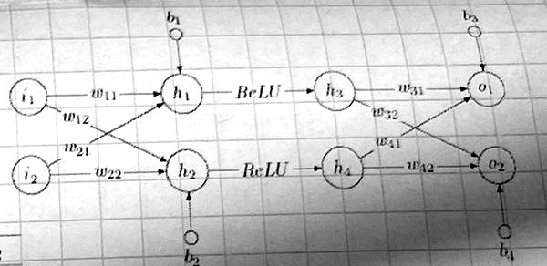

IA2 – lucrarea de miercuri
Cursurile 1–7, explicate pe înțeles, cu subiectele de anul trecut rezolvate pas cu pas
Cum arată lucrarea. Valorează 20 de puncte, se dă fără redare și ai voie cu
o jumătate de pagină de formule scrisă de mână
(o variantă gata de copiat e pe ultima pagină).
Anul trecut au fost
2 probleme:
- Problema 1: calculezi ce iese dintr-o rețea mică de neuroni, plus o întrebare de teorie despre funcțiile de activare.
- Problema 2: calculezi o funcție de cost și faci un pas de învățare (SGD) de mână.
Ordinea în care înveți: capitolele 1–5 (bazele), apoi refaci singur subiectele din capitolul 6, apoi citești capitolul 7 și la
final scrii foaia de formule.
1Ce face un singur neuron
Un neuron primește câteva numere (intrările) și face doar doi pași:
- Pasul 1: înmulțește fiecare intrare cu numărul scris pe firul ei (ponderea $w$), adună tot și mai adaugă un număr fix (bias-ul $b$).
- Pasul 2: bagă rezultatul într-o funcție (funcția de activare $f$). Ce iese e ieșirea neuronului.
{{NEURON}}
1
$a = w_1 x_1 + w_2 x_2 + w_3 x_3 + b = 0{,}5\cdot 2 + 1\cdot(-1) + 0{,}2\cdot 3 + 0{,}1 = 1 - 1 + 0{,}6 + 0{,}1 = $ 0,7
suma ponderată + bias. Numărul ăsta se numește „pre-activare” și se notează cu $a$.
2
cu ReLU: $\;y = \max(0;\ 0{,}7) = $ 0,7 sau cu sigmoid: $\;y = \dfrac{1}{1+e^{-0{,}7}} = $ 0,668
activarea (capitolul 3 explică ce face fiecare).
| Simbol | Ce înseamnă |
|---|
| $x_1, x_2, \dots$ | intrările: numerele pe care le primește neuronul |
| $w_1, w_2, \dots$ | ponderile: câte una pe fiecare fir, adică „cât de mult contează” intrarea respectivă |
| $b$ | bias-ul: un număr adunat la final, care mută pragul de la care neuronul „se aprinde” |
| $a$ | suma ponderată + bias (înainte de activare) |
| $f$, $y = f(a)$ | funcția de activare și ieșirea neuronului |
În curs, primul pas mai e scris scurt așa: $\;a = \mathbf{w}^T\mathbf{x} + b = \sum_i w_i x_i + b$. E exact același lucru: $\sum_i$ înseamnă „adună pentru fiecare intrare $i$”.
2Rețeaua: neuroni puși pe straturi
O rețea are straturi, iar calculul merge de la stânga la dreapta:
- stratul de intrare: doar numerele date, aici nu se calculează nimic;
- stratul ascuns: neuroni ca în capitolul 1;
- stratul de ieșire: tot neuroni, dar intrările lor sunt ieșirile stratului ascuns.
„Complet conectat” înseamnă că fiecare neuron primește toate ieșirile stratului dinainte. Fiecare fir are ponderea lui,
iar fiecare neuron are bias-ul lui.
{{RETEA_221}}
Calculul, neuron cu neuron. Pentru fiecare neuron te uiți ce fire intră în el: înmulțești fiecare fir cu nodul din care
pleacă, aduni, pui bias-ul, aplici activarea.
1
$h_1$: $\;a = 1\cdot 2 + 0{,}5\cdot(-1) + 0{,}5 = 2 \;\Rightarrow\; \text{ReLU}(2) = $ 2
în $h_1$ intră firul de la $x_1$ (pondere 1) și firul de la $x_2$ (pondere 0,5); bias 0,5
2
$h_2$: $\;a = (-0{,}5)\cdot 2 + (-1)\cdot(-1) + (-0{,}5) = -0{,}5 \;\Rightarrow\; \text{ReLU}(-0{,}5) = $ 0
ReLU transformă orice număr negativ în 0
3
$y$: $\;a = 0{,}5\cdot 2 + (-0{,}5)\cdot 0 + (-1) = $ 0
intrările ieșirii sunt rezultatele lui $h_1$ (2) și $h_2$ (0); aici nu e activare, deci $y = a$
Cum scrie cursul același lucru (formulele care te-au încurcat)
Cursul scrie calculul de mai sus cu indici, ca să meargă pentru orice număr de neuroni. Indicii îți spun despre ce nod e vorba:
$i$ = numărul intrării, $j$ = numărul neuronului ascuns, $k$ = numărul neuronului de ieșire.
1
$a_j = \sum_i w_{ji}\, x_i + w_{j0}$
pentru neuronul ascuns $j$: adună, pentru fiecare intrare $i$, ponderea firului dintre $i$ și $j$ înmulțită cu intrarea. Apoi adaugă
$w_{j0}$. $w_{ji}$ are doi indici pentru că un fir leagă două noduri (aici: spre $j$, de la $i$). $w_{j0}$ este bias-ul neuronului $j$:
cursul îl privește ca pe ponderea unei intrări imaginare $x_0 = 1$, deci $w_{j0}\cdot 1 = b_j$.
2
$z_j = h(a_j)$
$h$ e activarea din stratul ascuns (de ex. ReLU), iar $z_j$ e ce iese din neuronul ascuns $j$ (în exemplu: $z_1 = 2$, $z_2 = 0$).
3
$a_k = \sum_j w_{kj}\, z_j + w_{k0}, \qquad y_k = f(a_k)$
la fel pentru stratul de ieșire, doar că intrările nu mai sunt $x$-urile, ci $z$-urile. $f$ e activarea de la ieșire (sigmoid, softmax sau nimic).
Săgețile „→” din formula pe un rând din curs înseamnă doar „apoi”: întâi calculezi $a_j$, apoi $z_j$, apoi $a_k$, apoi $y_k$.
Atenție la ordinea indicilor. În curs, $w_{ji}$ înseamnă „spre $j$, de la $i$”. În subiectul de anul trecut, $w_{12}$
era firul de la $i_1$ spre $h_2$, adică invers. Nu te baza pe indici: uită-te pe desen pe ce fir e scrisă ponderea
și înmulțește-o cu nodul din care pleacă firul. Dacă nu e clar, scrie pe foaie ce convenție folosești.
Câți parametri are rețeaua? Un strat cu $n$ intrări și $m$ neuroni are $n\cdot m$ ponderi (câte una pe fir) și $m$ bias-uri.
În exemplu: $(2\cdot 2 + 2) + (2\cdot 1 + 1) = 9$ parametri.
3Funcțiile de activare
De ce e nevoie de ele: fără activare, oricâte straturi ai pune, rețeaua rămâne o funcție liniară (o dreaptă sau un plan) și
nu poate învăța forme complicate. Activarea „îndoaie” rezultatul.
{{GRAFICE}}
Sigmoid
$\sigma(x) = \dfrac{1}{1+e^{-x}}$
$\sigma'(x) = \sigma(x)\,(1-\sigma(x))$
Strivește orice număr între 0 și 1: $\sigma(0) = 0{,}5$, $\;\sigma(5) \approx 0{,}993$, $\;\sigma(-5) \approx 0{,}007$. Are forma literei S.
Plusuri
ieșirea se poate citi ca probabilitate; e netedă și derivabilă peste tot (bună pentru backprop); derivata se calculează din valoarea ei; e crescătoare.
Minusuri
la capete curba e plată (se saturează), deci derivata ≈ 0 și gradientul „dispare” (vanishing gradient): rețeaua nu mai învață; nu e centrată în 0; $e^x$ costă calcul.
Tanh
$\tanh(x) = 2\sigma(2x) - 1$
$\tanh'(x) = 1 - \tanh^2(x)$
Ca sigmoid, dar între −1 și 1, deci centrată în 0. Se saturează și ea la capete.
ReLU
$\text{ReLU}(x) = \max(0, x)$
derivata: 1 dacă $x>0$, 0 dacă $x<0$
Lasă numerele pozitive cum sunt și face 0 din cele negative.
Plusuri
foarte ieftină (doar un max); pentru $x>0$ derivata e 1, deci nu se saturează și SGD converge mai repede.
Minusuri
pentru $x<0$ derivata e 0, deci neuronul poate „muri” (nu mai învață); e nemărginită în sus.
Leaky ReLU
$f(x) = x$ dacă $x \ge 0$
$f(x) = 0{,}01\,x$ dacă $x<0$
Ca ReLU, dar la negative lasă o pantă mică, nu 0. Așa neuronul nu mai moare.
Softmax
$y_k = \dfrac{e^{a_k}}{\sum_j e^{a_j}}$
Se pune la ieșire când ai $K$ clase: transformă $K$ numere oarecare în probabilități (toate pozitive, cu suma 1).
Exemplu: $[2;\ 1;\ 0{,}1] \to e^2 = 7{,}39,\ e^1 = 2{,}72,\ e^{0,1} = 1{,}11$, suma $11{,}21$ $\;\Rightarrow\;$ [0,659; 0,242; 0,099].
Răspunsuri gata făcute pentru teorie
„Explicați caracteristicile sigmoid”: are formă de S; ieșirea e strict între 0 și 1, deci se poate interpreta ca probabilitate; e
monoton crescătoare; e continuă și derivabilă, cu $\sigma' = \sigma(1-\sigma)$ (util la backprop); $\sigma(0) = 0{,}5$ (pragul la clasificare binară);
pentru valori foarte mari sau foarte mici se saturează și gradientul dispare.
„Două avantaje ReLU”: (1) se calculează foarte ieftin, $\max(0,x)$; (2) pentru $x>0$ derivata e 1, deci nu se saturează, gradientul nu
dispare și antrenarea cu SGD converge mai repede.
4Funcția de cost: cât de greșită e rețeaua
Ai ce scoate rețeaua ($y$) și ce voiai să scoată (ținta $t$, „target”). Costul e un singur număr care spune cât de departe
sunt. A antrena rețeaua înseamnă a face acest număr cât mai mic.
MSE (eroarea medie pătratică), pentru regresie
$E = \dfrac{1}{2}\sum_k (y_k - t_k)^2$
Pe românește: pentru fiecare ieșire faci diferența față de țintă, o ridici la pătrat, aduni tot și împarți la 2. ½ e pus ca să dispară
2-ul când derivezi: $\;\dfrac{\partial E}{\partial y_k} = y_k - t_k\;$ (asta se numește eroarea).
=
$y = (0;\ -1{,}5),\; t = (1;\ 0{,}5)$: $\;E = \tfrac12\left[(0-1)^2 + (-1{,}5-0{,}5)^2\right] = \tfrac12(1+4) = $ 2,5
Entropia încrucișată (cross-entropy), pentru clasificare
Ținta se scrie „one-hot”: un 1 pe poziția clasei corecte și 0 în rest. De exemplu, la 4 clase (comedie, horror, acțiune, dragoste),
horror $= [0, 1, 0, 0]$. Ieșirea $y$ vine din softmax (probabilități).
$L = -\sum_k t_k \ln y_k \;=\; -\ln y_{\text{corect}}$
Toți termenii cu $t_k = 0$ dispar, așa că rămâne doar minus logaritmul probabilității clasei corecte.
| probabilitatea clasei corecte | 0,9 | 0,5 | 0,4 | 0,3 | 0,1 |
|---|
| costul $-\ln$ | 0,105 | 0,693 | 0,916 | 1,204 | 2,303 |
|---|
Cu cât rețeaua e mai sigură pe clasa corectă, cu atât costul e mai mic. Pentru 2 clase (ieșire sigmoid):
$\;L = -\left[\,t \ln y + (1-t)\ln(1-y)\,\right]$.
Întrebarea clasică: de ce costul nu ajunge la 0 nici cu acuratețe 100%? Softmax dă mereu valori strict între 0 și 1,
deci $y_{\text{corect}} < 1$ și $-\ln y_{\text{corect}} > 0$. Acuratețea 100% înseamnă doar că clasa corectă are probabilitatea cea mai mare, nu că
probabilitatea ei e exact 1.
5Cum învață rețeaua: gradient descent
Costul $E$ depinde de ponderi. Derivata $\dfrac{\partial E}{\partial w}$ (gradientul) e panta: îți spune în ce sens crește costul dacă modifici $w$.
Ca să scadă costul, mergi în sens invers, cu un pas mic:
$w_{\text{nou}} = w - \eta \cdot \dfrac{\partial E}{\partial w}$
$\eta$ (eta) este rata de învățare, adică mărimea pasului. Dacă e prea mică, merge încet. Dacă e prea mare, sare peste minim și oscilează.
{{GRADIENT}}
Două alegeri separate, care se combină între ele.
- Pe câte exemple calculezi gradientul. GD: pe tot setul de date, apoi un pas. SGD: un pas după fiecare exemplu
(pași mai „zgomotoși”, dar mult mai mulți și mai rapizi). Mini-batch: un pas după un grup de 8, 16, 32… exemple.
- Cum transformi gradientul în pas: simplu, momentum, Nesterov, AdaGrad, RMSProp, Adam (mai jos).
Orice metodă de la 2 primește gradientul calculat oricum de la 1. În practică se folosește „Adam cu mini-batch”.
Mai jos scriu gradientul scurt: $\;g = \dfrac{\partial E}{\partial w}$.
Momentum
Ține minte pasul trecut $\Delta w^{(t-1)}$ și mai adaugă o parte din el:
$\Delta w^{(t)} = -\eta\, g + \mu\,\Delta w^{(t-1)}, \qquad w \leftarrow w + \Delta w^{(t)}, \qquad \mu \approx 0{,}9$
Pasul de acum = pasul simplu + 0,9 din pasul trecut. E ca o bilă grea: dacă a coborât mult timp în aceeași direcție, prinde viteză.
Dacă gradientul își schimbă semnul de la un pas la altul (zigzag), bucățile se anulează între ele, deci oscilează mai puțin.
Nesterov
Pasul de la momentum are două bucăți: inerția $\mu\,\Delta w^{(t-1)}$, pe care o faci oricum, și gradientul.
Momentum calculează gradientul unde ești acum. Nesterov zice: „Știu deja că inerția mă duce în punctul $w + \mu\,\Delta w^{(t-1)}$. Mă uit la pantă acolo.”
$\Delta w^{(t)} = -\eta\, g\big(\,w + \mu\,\Delta w^{(t-1)}\big) + \mu\,\Delta w^{(t-1)}$
Singura diferență față de momentum e punctul în care calculezi gradientul. De ce ajută: dacă inerția te-ar duce dincolo de minim,
acolo panta arată deja înapoi, deci te frânează înainte să treci de minim, nu după. E ca un schior care se uită unde ajunge din avânt și corectează din timp.
AdaGrad
Fiecare pondere $w_i$ are variabila ei $r_i$, în care adună pătratele gradienților ei de la pașii trecuți. Pe ăștia îi calculezi oricum la fiecare pas,
cu backprop, la ponderea de atunci. AdaGrad doar îi ține minte. Se împarte pasul, nu ponderea:
$r_i \leftarrow r_i + g_i^2, \qquad w_i \leftarrow w_i - \dfrac{\eta}{\sqrt{r_i + \delta}}\; g_i$
$\delta \approx 10^{-8}$ e doar ca să nu împarți la 0
| pas | $r$ | pasul făcut $= \dfrac{0{,}1}{\sqrt r}\cdot 2$ |
|---|
| 1 | 4 | 0,1 |
| 2 | 8 | 0,071 |
| 3 | 12 | 0,058 |
| 4 | 16 | 0,05 |
Exemplu: $\eta = 0{,}1$ și gradientul 2 la fiecare pas.
O pondere cu gradienți mari primește pași tot mai mici. Una care s-a mișcat rar păstrează pași mari. De aici „fiecare pondere are pasul ei”.
Problema: $r$ doar crește, deci spre final pașii ajung aproape 0 și învățarea devine foarte lentă.
RMSProp
Repară problema lui AdaGrad. În același loc (sub radical, la numitor), în loc de sumă pune o medie mobilă, care uită treptat gradienții vechi:
$r_i \leftarrow \beta\, r_i + (1-\beta)\, g_i^2, \qquad w_i \leftarrow w_i - \dfrac{\eta}{\sqrt{r_i + \delta}}\; g_i, \qquad \beta \approx 0{,}9$
Cu $\beta = 0{,}9$: la fiecare pas $r$ păstrează 90% din ce era și ia 10% din gradientul nou. Gradienții vechi contează tot mai puțin, deci $r$ nu crește
la infinit și pasul nu moare. În exemplul de sus, $r$ se apropie de 4 și rămâne acolo, deci pasul rămâne în jur de 0,1 (la AdaGrad scădea întruna).
Adam = momentum + RMSProp + corecție
Ține minte două medii mobile pentru fiecare pondere:
1
$s \leftarrow \beta_1 s + (1-\beta_1)\, g, \qquad \beta_1 \approx 0{,}9$
media gradienților = direcția (rolul lui momentum)
2
$r \leftarrow \beta_2 r + (1-\beta_2)\, g^2, \qquad \beta_2 \approx 0{,}99$
media pătratelor = mărimea pasului (rolul lui RMSProp)
3
$\hat s = \dfrac{s}{1-\beta_1^{\,t}}, \qquad \hat r = \dfrac{r}{1-\beta_2^{\,t}}$
corecția; $t$ = numărul pasului (1, 2, 3, …)
4
$w \leftarrow w - \eta\, \dfrac{\hat s}{\sqrt{\hat r + \delta}}$
De ce e nevoie de corecție. $s$ și $r$ pornesc de la 0. La primul pas: $s = 0{,}1\,g$, adică de 10 ori mai mic decât gradientul real,
iar $r = 0{,}01\,g^2$, de 100 de ori mai mic. Mediile sunt trase spre 0 doar pentru că au pornit de la 0, nu pentru că gradientul ar fi mic.
Corecția compensează: la $t = 1$, $\;\hat s = \dfrac{0{,}1\,g}{1-0{,}9} = \dfrac{0{,}1\,g}{0{,}1} = g$, exact cât trebuie.
După mulți pași $\beta^t$ ajunge aproape 0, deci împarți la 1 și corecția dispare singură. E doar o reparație pentru primii pași.
Pe scurt. Momentum: ține minte direcția. Nesterov: momentum, dar se uită la pantă puțin înainte.
AdaGrad: fiecare pondere își micșorează pasul după cât de mari au fost gradienții ei. RMSProp: AdaGrad cu memorie scurtă, ca să nu se oprească.
Adam: direcția de la momentum + pasul de la RMSProp + corecția de la început; e cel mai folosit.
Normalizarea datelor: $\tilde{x} = (x-\mu)/\sigma$ (medie 0, varianță 1), cu aceleași $\mu$ și $\sigma$ la antrenare, validare și test. Ajută antrenarea să conveargă.
Backpropagation: cum se calculează derivatele
Se folosește regula lanțului: derivata unui nod = derivata care vine din dreapta × derivata locală a nodului. Exemplul din curs,
$f = (x+y)\cdot z$ cu $x=-2,\ y=5,\ z=-4$:
{{BACKPROP}}
La „+” derivata locală e 1, deci gradientul trece la fel spre $x$ și $y$. La „×” fiecare intrare primește gradientul înmulțit cu
cealaltă intrare. În rețea, cursul scrie asta așa: $\;\dfrac{\partial L}{\partial w_{ji}} = \delta_j\, z_i$, cu $\delta_k = y_k - t_k$ la ieșire și
$\delta_j = h'(a_j)\sum_k w_{kj}\,\delta_k$ în stratul ascuns.
6Subiectele de anul trecut, rezolvate pas cu pas
Refă-le singur pe foaie și abia apoi verifică aici. Rezolvarea care circulă pe Drive are greșeli, așa că nu te lua după ea.
Varianta 1 · Problema 1: sigmoid în stratul ascuns, ReLU la ieșire, intrări (10, 30, 20)
ENUNȚUL, EXACT CUM S-A DAT
1. Fie o arhitectură de rețea neuronală, cu intrările $I_1, I_2, I_3$.
a) Considerând că stratul ascuns folosește ca funcție de activare funcția sigmoid, iar stratul de ieșire folosește o activare ReLU,
calculați ieșirea rețelei pentru valorile 10, 30, 20 $(I_1, I_2, I_3)$.
b) Explicați pe scurt caracteristicile funcției sigmoid.

schema din enunț, desenată de mână. Minusurile se văd greu: $I_2 \to H_1 = -0{,}1$, $\;I_2 \to H_2 = -1{,}2$, $\;H_1 \to O_2 = -3{,}1$.
S-ul din cercuri e doar semnul de neuron; ce activare are fiecare strat scrie în text.
REZOLVARE
{{V1P1}}
1
$H_1 = 0{,}2\cdot10 - 0{,}1\cdot30 + 0{,}4\cdot20 = 2 - 3 + 8 = 7 \;\Rightarrow\; \sigma(7) = \dfrac{1}{1+e^{-7}} = $ 0,9991
firele care intră în $H_1$: de la $I_1$ (0,2), $I_2$ (−0,1), $I_3$ (0,4); nu e bias
2
$H_2 = 0{,}7\cdot10 - 1{,}2\cdot30 + 1{,}2\cdot20 = 7 - 36 + 24 = -5 \;\Rightarrow\; \sigma(-5) = \dfrac{1}{1+e^{5}} = $ 0,0067
3
$O_1 = 1{,}1\cdot0{,}9991 + 0{,}1\cdot0{,}0067 = 1{,}0997 \;\Rightarrow\; \text{ReLU} = $ 1,0997
la ieșire intrările sunt valorile după sigmoid
4
$O_2 = -3{,}1\cdot0{,}9991 + 1{,}17\cdot0{,}0067 = -3{,}0893 \;\Rightarrow\; \text{ReLU} = $ 0
b) Caracteristicile sigmoid: răspunsul gata făcut de la capitolul 3.
Varianta 1 · Problema 2: $x = Ay + b$, cu $A_{ij} = w_{i-j}$, cost MSE, un pas de SGD
ENUNȚUL, EXACT CUM S-A DAT (FĂRĂ SCHEMĂ)
2. O rețea neuronală poate fi reprezentată sub forma $\;x = f(y) = Ay + b$,
unde $y \in \mathbb{R}^N$ este intrarea, $A \in \mathbb{R}^{N\times N}$, $b \in \mathbb{R}^N$, $N = 3$. De asemenea, elementele matricii $A$ sunt
$A_{ij} = w_{i-j}$ $\;(i, j \in \{0, 1, 2\})$. Presupunem că, în setul de antrenare, avem disponibile perechi de tipul $(y, t)$, unde $t$ reprezintă
targetul asociat intrării $y$. Se va folosi funcția de cost eroare medie pătratică.
a) Scrieți expresia lui $x$ în funcție de valorile $w, y, b$. Câți parametri are rețeaua?
b) Scrieți expresia funcției de cost.
c) Scrieți sub formă explicită, punând în evidență parametrii rețelei, pașii algoritmului SGD. Pornind de la valorile arbitrare:
$w_{-2} = 0{,}2,\; w_{-1} = 0{,}1,\; w_0 = 0,\; w_1 = 0{,}1,\; w_2 = 0{,}2$
$b_0 = b_1 = b_2 = 0$
$\eta = 0{,}01$ (rata de învățare)
calculați valorile după prima iterație a SGD. Se va considera perechea: $\;(y = [0{,}6\;\; 0\;\; 0{,}4],\; t = [1\;\; 0\;\; 0])$
REZOLVARE
Ce spune problema, pe românește: e un strat de rețea fără activare, cu 3 intrări $(y_0, y_1, y_2)$ și 3 ieșiri $(x_0, x_1, x_2)$.
Matricea $A$ e specială: căsuța din rândul $i$, coloana $j$ conține ponderea $w_{i-j}$. De aceea pe fiecare diagonală e aceeași pondere:
{{MATRICE}}
a) Ieșirile sunt scrise în dreapta schemei. Parametri: 5 ponderi ($w_{-2}, w_{-1}, w_0, w_1, w_2$) + 3 bias-uri ($b_0, b_1, b_2$) = 8 parametri.
b) $\;E = \tfrac12\left[(x_0-t_0)^2 + (x_1-t_1)^2 + (x_2-t_2)^2\right]$
c) Enunțul cere pașii SGD „sub formă explicită”: adică formulele cu litere pentru fiecare parametru, nu doar numerele.
Ordinea: ieșirile → erorile → costul → derivatele (cu litere) → pasul $w_{\text{nou}} = w - \eta\cdot\dfrac{\partial E}{\partial w}$.
Date: $y = [0{,}6;\ 0;\ 0{,}4]$, $t = [1;\ 0;\ 0]$, $\eta = 0{,}01$, $w_{-2} = 0{,}2$, $w_{-1} = 0{,}1$, $w_0 = 0$, $w_1 = 0{,}1$, $w_2 = 0{,}2$, toate $b = 0$.
1
Ieșirile cu ponderile de acum (formulele de la a)):
$x_0 = w_0y_0 + w_{-1}y_1 + w_{-2}y_2 + b_0 = 0\cdot0{,}6 + 0{,}1\cdot0 + 0{,}2\cdot0{,}4 + 0 = $ 0,08
$x_1 = w_1y_0 + w_0y_1 + w_{-1}y_2 + b_1 = 0{,}1\cdot0{,}6 + 0\cdot0 + 0{,}1\cdot0{,}4 + 0 = $ 0,1
$x_2 = w_2y_0 + w_1y_1 + w_0y_2 + b_2 = 0{,}2\cdot0{,}6 + 0{,}1\cdot0 + 0\cdot0{,}4 + 0 = $ 0,12
2
Eroarea fiecărei ieșiri, $\;e_i = x_i - t_i$:
$e_0 = 0{,}08 - 1 = $ −0,92$\qquad e_1 = 0{,}1 - 0 = $ 0,1$\qquad e_2 = 0{,}12 - 0 = $ 0,12
Costul: $\;E = \tfrac12(e_0^2 + e_1^2 + e_2^2) = \tfrac12(0{,}8464 + 0{,}01 + 0{,}0144) = $ 0,4354
costul nu intră în pasul SGD, dar arată cât greșește rețeaua înainte de pas
3
Costul scris complet: în $E = \tfrac12(x_0-t_0)^2 + \tfrac12(x_1-t_1)^2 + \tfrac12(x_2-t_2)^2$ pui fiecare $x_i$ desfăcut cu ponderi (de la a)):
$$\begin{aligned}E &= \tfrac12(w_0y_0 + w_{-1}y_1 + w_{-2}y_2 + b_0 - t_0)^2 \\ &\quad + \tfrac12(w_1y_0 + w_0y_1 + w_{-1}y_2 + b_1 - t_1)^2 \\ &\quad + \tfrac12(w_2y_0 + w_1y_1 + w_0y_2 + b_2 - t_2)^2\end{aligned}$$
fiecare paranteză este exact $x_i - t_i$, adică eroarea $e_i$ de la pasul 2
4
Cum derivezi o bucată $\tfrac12(\text{paranteză})^2$ după un parametru: $\;\tfrac12\cdot 2\cdot(\text{paranteză})\cdot(\text{derivata parantezei})$.
În paranteză, tot ce nu conține parametrul e constantă, deci derivata lui e 0. Rămâne doar ce stă lângă parametru. De exemplu, după $w_0$:
$$\frac{\partial}{\partial w_0}(\textcolor{#c2410c}{w_0}y_0 + w_{-1}y_1 + w_{-2}y_2 + b_0 - t_0) = \textcolor{#c2410c}{y_0} + 0 + 0 + 0 - 0 = \textcolor{#c2410c}{y_0}$$
dacă parametrul nu apare deloc într-o paranteză, toată bucata aceea dă 0. Cu portocaliu: parametrul după care derivezi și ce rămâne în locul lui.
Derivatele după cele 5 ponderi:
$$\begin{aligned}\dfrac{\partial E}{\partial w_0} &= \tfrac12\cdot 2\cdot(\textcolor{#c2410c}{w_0}y_0 + w_{-1}y_1 + w_{-2}y_2 + b_0 - t_0)\cdot \textcolor{#c2410c}{y_0} \\ &\quad+ \tfrac12\cdot 2\cdot(w_1y_0 + \textcolor{#c2410c}{w_0}y_1 + w_{-1}y_2 + b_1 - t_1)\cdot \textcolor{#c2410c}{y_1} \\ &\quad+ \tfrac12\cdot 2\cdot(w_2y_0 + w_1y_1 + \textcolor{#c2410c}{w_0}y_2 + b_2 - t_2)\cdot \textcolor{#c2410c}{y_2} \\ &= e_0\,y_0 + e_1\,y_1 + e_2\,y_2\end{aligned}$$
$$\begin{aligned}\dfrac{\partial E}{\partial w_1} &= 0 \qquad \text{(în paranteza lui } x_0 \text{ nu apare } w_1 \text{)} \\ &\quad+ \tfrac12\cdot 2\cdot(\textcolor{#c2410c}{w_1}y_0 + w_0y_1 + w_{-1}y_2 + b_1 - t_1)\cdot \textcolor{#c2410c}{y_0} \\ &\quad+ \tfrac12\cdot 2\cdot(w_2y_0 + \textcolor{#c2410c}{w_1}y_1 + w_0y_2 + b_2 - t_2)\cdot \textcolor{#c2410c}{y_1} \\ &= e_1\,y_0 + e_2\,y_1\end{aligned}$$
$$\begin{aligned}\dfrac{\partial E}{\partial w_{-1}} &= \tfrac12\cdot 2\cdot(w_0y_0 + \textcolor{#c2410c}{w_{-1}}y_1 + w_{-2}y_2 + b_0 - t_0)\cdot \textcolor{#c2410c}{y_1} \\ &\quad+ \tfrac12\cdot 2\cdot(w_1y_0 + w_0y_1 + \textcolor{#c2410c}{w_{-1}}y_2 + b_1 - t_1)\cdot \textcolor{#c2410c}{y_2} \\ &\quad+ 0 \qquad \text{(în paranteza lui } x_2 \text{ nu apare } w_{-1} \text{)} \\ &= e_0\,y_1 + e_1\,y_2\end{aligned}$$
$$\begin{aligned}\dfrac{\partial E}{\partial w_2} &= 0 \qquad \text{(în paranteza lui } x_0 \text{ nu apare } w_2 \text{)} \\ &\quad+ 0 \qquad \text{(în paranteza lui } x_1 \text{ nu apare } w_2 \text{)} \\ &\quad+ \tfrac12\cdot 2\cdot(\textcolor{#c2410c}{w_2}y_0 + w_1y_1 + w_0y_2 + b_2 - t_2)\cdot \textcolor{#c2410c}{y_0} \\ &= e_2\,y_0\end{aligned}$$
$$\begin{aligned}\dfrac{\partial E}{\partial w_{-2}} &= \tfrac12\cdot 2\cdot(w_0y_0 + w_{-1}y_1 + \textcolor{#c2410c}{w_{-2}}y_2 + b_0 - t_0)\cdot \textcolor{#c2410c}{y_2} \\ &\quad+ 0 \qquad \text{(în paranteza lui } x_1 \text{ nu apare } w_{-2} \text{)} \\ &\quad+ 0 \qquad \text{(în paranteza lui } x_2 \text{ nu apare } w_{-2} \text{)} \\ &= e_0\,y_2\end{aligned}$$
Derivatele după cele 3 bias-uri (lângă bias stă 1):
$$\begin{aligned}\dfrac{\partial E}{\partial b_0} &= \tfrac12\cdot 2\cdot(w_0y_0 + w_{-1}y_1 + w_{-2}y_2 + \textcolor{#c2410c}{b_0} - t_0)\cdot \textcolor{#c2410c}{1} \\ &\quad+ 0 \qquad \text{(în paranteza lui } x_1 \text{ nu apare } b_0 \text{)} \\ &\quad+ 0 \qquad \text{(în paranteza lui } x_2 \text{ nu apare } b_0 \text{)} \\ &= e_0\end{aligned}$$
$$\begin{aligned}\dfrac{\partial E}{\partial b_1} &= 0 \qquad \text{(în paranteza lui } x_0 \text{ nu apare } b_1 \text{)} \\ &\quad+ \tfrac12\cdot 2\cdot(w_1y_0 + w_0y_1 + w_{-1}y_2 + \textcolor{#c2410c}{b_1} - t_1)\cdot \textcolor{#c2410c}{1} \\ &\quad+ 0 \qquad \text{(în paranteza lui } x_2 \text{ nu apare } b_1 \text{)} \\ &= e_1\end{aligned}$$
$$\begin{aligned}\dfrac{\partial E}{\partial b_2} &= 0 \qquad \text{(în paranteza lui } x_0 \text{ nu apare } b_2 \text{)} \\ &\quad+ 0 \qquad \text{(în paranteza lui } x_1 \text{ nu apare } b_2 \text{)} \\ &\quad+ \tfrac12\cdot 2\cdot(w_2y_0 + w_1y_1 + w_0y_2 + \textcolor{#c2410c}{b_2} - t_2)\cdot \textcolor{#c2410c}{1} \\ &= e_2\end{aligned}$$
5
Pasul SGD, $\;w_{\text{nou}} = w - \eta\cdot\dfrac{\partial E}{\partial w}$, cu $\eta = 0{,}01$:
$w_0 = 0 - 0{,}01\cdot(-0{,}92\cdot0{,}6 + 0{,}1\cdot0 + 0{,}12\cdot0{,}4) = 0 - 0{,}01\cdot(-0{,}504) = $ 0,00504
$w_1 = 0{,}1 - 0{,}01\cdot(0{,}1\cdot0{,}6 + 0{,}12\cdot0) = 0{,}1 - 0{,}01\cdot0{,}06 = $ 0,0994
$w_{-1} = 0{,}1 - 0{,}01\cdot(-0{,}92\cdot0 + 0{,}1\cdot0{,}4) = 0{,}1 - 0{,}01\cdot0{,}04 = $ 0,0996
$w_2 = 0{,}2 - 0{,}01\cdot(0{,}12\cdot0{,}6) = 0{,}2 - 0{,}01\cdot0{,}072 = $ 0,19928
$w_{-2} = 0{,}2 - 0{,}01\cdot(-0{,}92\cdot0{,}4) = 0{,}2 - 0{,}01\cdot(-0{,}368) = $ 0,20368
$b_0 = 0 - 0{,}01\cdot(-0{,}92) = $ 0,0092
$b_1 = 0 - 0{,}01\cdot0{,}1 = $ −0,001
$b_2 = 0 - 0{,}01\cdot0{,}12 = $ −0,0012
Pe Drive lipsesc bias-urile la pasul SGD. Și ele sunt parametri, deci se actualizează (ultimele trei rânduri de mai sus).
Varianta 2 · Problema 1: rețea cu ReLU
ENUNȚUL, EXACT CUM S-A DAT
1. Fie următoarea rețea neurală cu un strat complet conectat și funcții de activare RELU. Rețeaua are 2 intrări $(i_1, i_2)$,
4 unități ascunse $(h_1, h_2, h_3, h_4)$. Ieșirile sunt notate cu $(o_1, o_2)$, iar valorile dorite (target) cu $(t_1, t_2)$.
Ponderile sunt notate cu $w$ și bias-urile cu $b$.

schema din enunț
a) Calculați cele două valori de la ieșire considerând valorile numerice din tabel. Scrieți pe foaie toate calculele, inclusiv cele intermediare.
b) Menționați două avantaje ale funcției de activare RELU.
| $i_1$ | $i_2$ | $w_{11}$ | $w_{12}$ | $w_{21}$ | $w_{22}$ | $w_{31}$ | $w_{32}$ | $w_{41}$ | $w_{42}$ | $b_1$ | $b_2$ | $b_3$ | $b_4$ | $t_1$ | $t_2$ |
|---|
| 2.0 | -1.0 | 1.0 | -0.5 | 0.5 | -1.0 | 0.5 | -1.0 | -0.5 | 1.0 | 0.5 | -0.5 | -1.0 | 0.5 | 1.0 | 0.5 |
REZOLVARE
Aceeași schemă, cu numerele din tabel puse direct pe fire:
{{V2P1}}
1
$h_1 = w_{11} i_1 + w_{21} i_2 + b_1 = 1\cdot2 + 0{,}5\cdot(-1) + 0{,}5 = 2 \;\Rightarrow\; h_3 = \text{ReLU}(2) = $ 2
în $h_1$ intră $w_{11}$ (de la $i_1$) și $w_{21}$ (de la $i_2$)
2
$h_2 = w_{12} i_1 + w_{22} i_2 + b_2 = -0{,}5\cdot2 + (-1)\cdot(-1) - 0{,}5 = -0{,}5 \;\Rightarrow\; h_4 = $ 0
pe Drive aici s-a greșit: au folosit $w_{21}$ în loc de $w_{12}$ și le-a ieșit 1,5
3
$o_1 = w_{31} h_3 + w_{41} h_4 + b_3 = 0{,}5\cdot2 + (-0{,}5)\cdot0 - 1 = $ 0
4
$o_2 = w_{32} h_3 + w_{42} h_4 + b_4 = -1\cdot2 + 1\cdot0 + 0{,}5 = $ −1,5
desenul nu are ReLU la ieșire. Dacă la examen ți se spune că și ieșirea are ReLU, atunci $o_2 = 0$.
b) Două avantaje ReLU: răspunsul gata făcut de la capitolul 3. (Bonus, dacă se cere eroarea: $E = \tfrac12[(1-0)^2 + (0{,}5+1{,}5)^2] = 2{,}5$.)
Varianta 2 · Problema 2: entropia încrucișată, 4 clase
ENUNȚUL, EXACT CUM S-A DAT (FĂRĂ SCHEMĂ)
2. Prietenul tău Tom îți cere să construiești un model pentru a-l ajuta să se decidă ce film să vadă în funcție de posterul filmului.
Categoriile sunt comedie, horror, acțiune, dragoste. Ai primit un set de date mare care mapează fiecare poster $x$ la una din cele 4 categorii.
Te decizi să folosești funcția de cost entropie încrucișată, definită ca:
$L_{CE}(y, t) = -\displaystyle\sum_{k=1}^{C} t_k \log y_k$
unde $t$ reprezintă eticheta corectă (ground truth) asociată posterului $x$, $y$ reprezintă vectorul de distribuții obținut la ieșirea rețelei
și $C$ reprezintă numărul de clase. Dacă posterul are eticheta horror, $t = [0, 1, 0, 0]$, iar dacă are eticheta comedie, $t = [1, 0, 0, 0]$.
a) Presupunem că modelul are la ieșire $y = [0.1, 0.4, 0.3, 0.2]$ și prezice corect eticheta. Cât este valoarea entropiei încrucișate?
b) Cât este costul dacă eticheta corectă ar fi fost $[0, 0, 1, 0]$?
c) Presupunem că ultimul strat al modelului are o funcție de activare de tip softmax și că modelul antrenat atinge acuratețe 100%.
Explicați [de ce co]stul nu va fi niciodată 0 în acest caz.
[ ] = cuvinte acoperite de deget pe poză
REZOLVARE
„Prezice corect eticheta” înseamnă că cea mai mare probabilitate (0,4) e la clasa corectă, adică horror.
a
eticheta corectă e horror, $t = [0,1,0,0]$: $\;L = -(0\cdot\ln0{,}1 + 1\cdot\ln0{,}4 + 0 + 0) = -\ln 0{,}4 = $ 0,916
rămâne doar termenul clasei corecte
b
dacă ar fi fost $t = [0,0,1,0]$ (acțiune): $\;L = -\ln 0{,}3 = $ 1,204
costul e mai mare, pentru că rețeaua a dat o probabilitate mai mică clasei corecte
c
de ce nu e niciodată 0: vezi caseta verde de la capitolul 4
7Restul materiei, pe scurt (pentru întrebări de teorie)
Supra-învățarea și regularizarea
Supra-învățare (overfitting): rețeaua „tocește” datele de antrenare. Pe ele merge foarte bine, dar pe date noi merge prost.
Sub-învățare: modelul e prea simplu și greșește peste tot.
Eroarea se descompune așa: $\text{MSE} = \text{Bias}^2 + \text{Varianță} + \sigma^2_{\text{zgomot}}$. Bias mare înseamnă sub-învățare, varianță mare
înseamnă supra-învățare. Zgomotul nu se poate reduce.
{{OVERFIT}}
Cum o combați (regularizare):
- L2 (weight decay): adaugi la cost $\lambda\cdot\tfrac12\sum w^2$. Penalizează ponderile mari, iar gradientul primește în plus $\lambda w$, care împinge ponderile spre 0. L1: adaugi $\lambda\sum|w|$; multe ponderi ajung exact 0.
- Early stopping: te oprești când eroarea pe validare începe să crească (linia punctată din grafic).
- Dropout: la antrenare „stingi” aleator neuroni (îi pui pe 0), alții la fiecare exemplu, cu p = 0,5 la stratul ascuns și 0,8 la intrare. La ieșire nu. Rețeaua nu se mai poate baza pe un singur neuron.
- Augmentarea datelor (rotiri, translații, scalări, zgomot) și ensemble (media mai multor modele).
Rețele convoluționale (CNN)
Pentru imagini. În loc de ponderi pe fiecare pixel, se folosește un filtru mic (de ex. 3×3) care se plimbă peste imagine. La fiecare
poziție înmulțești căsuță cu căsuță și aduni (plus bias). Avantaje: puțini parametri (aceleași ponderi peste tot), conexiuni locale, iar o
trăsătură e recunoscută oriunde ar fi în imagine.
{{CONV}}
Dimensiunea ieșirii (pe fiecare latură): $\;\left\lfloor \dfrac{N + 2P - M}{S} \right\rfloor + 1$, unde $N$ = latura intrării, $M$ = latura
filtrului, $P$ = câți pixeli de 0 pui pe margine (padding), $S$ = din câți în câți pixeli muți filtrul (stride). Fără padding și cu $S = 1$
iese $N - M + 1$. Ca să rămână aceeași dimensiune („same”) pui $P = (M-1)/2$.
Parametri: un filtru $M\times M$ pe o imagine cu $C$ canale are $M^2 C + 1$ parametri (ponderi + bias). Cu $C_{\text{out}}$ filtre ai
$(M^2C+1)\cdot C_{\text{out}}$.
=
Intrare 32×32×3, 10 filtre 5×5, $P=0$, $S=1$: ieșire $32 - 5 + 1 = 28$, deci 28×28×10, cu $(5\cdot5\cdot3+1)\cdot10 = $ 760 parametri
cu $P = 2$: $(32+4-5)/1 + 1 = 32$. Cu $S = 2$, $P = 0$: $\lfloor 27/2 \rfloor + 1 = 14$.
{{POOL}}
Pooling micșorează imaginea: din fiecare bloc 2×2 păstrezi maximul (max-pooling) sau media. Nu are parametri.
Rețele cunoscute: LeNet (cifre scrise de mână), AlexNet (2012, ImageNet), VGG (filtre 3×3), GoogLeNet / Inception, ResNet.
Detecție: IoU = aria intersecției / aria reuniunii; detecția e corectă dacă IoU > 0,5. NMS păstrează dreptunghiul cel mai sigur și le
șterge pe cele suprapuse peste el. Segmentare: U-Net.
Clasificare: generativ și discriminant
- Generativ: modelezi cum arată datele din fiecare clasă, $p(x|C_k)$, și cât de des apare fiecare clasă, $p(C_k)$, apoi aplici Bayes:
$\;p(C_k|x) = \dfrac{p(x|C_k)\,p(C_k)}{\sum_l p(x|C_l)\,p(C_l)}$. Pentru 2 clase rezultatul are forma unei sigmoide, pentru mai multe clase forma softmax.
- Discriminant: o funcție $y(x) = w^Tx + w_0$ dă direct clasa, fără să modelezi datele. Are mai puțini parametri și de obicei merge mai bine.
PCA și ICA
PCA reduce numărul de dimensiuni: proiectezi datele pe direcțiile pe care ele variază cel mai mult (sau, echivalent, pierzi cât mai
puțin la proiecție). Pașii:
- scazi media din date;
- calculezi matricea de covarianță $K = \tfrac1N\sum (x_n - \bar{x})(x_n - \bar{x})^T$;
- afli valorile proprii $\lambda$ și vectorii proprii $u$ ai lui $K$ ($Ku = \lambda u$);
- păstrezi vectorii cu cele mai mari $\lambda$. Varianța pe direcția $u_1$ este chiar $\lambda_1$.
Se folosește la compresie, vizualizare și extragere de trăsături.
{{PCA}}
ICA separă surse independente amestecate: „cocktail party”, doi oameni vorbesc deodată și ai două microfoane.
PCA găsește direcții necorelate, ICA găsește componente independente (care trebuie să fie ne-gaussiene).
8Foaia de formule: de copiat de mână (½ pagină)
Chenarul are exact o jumătate de A4. Pe foaie sunt doar formule, teoria o înveți din capitolele de mai sus. Copiaz-o mărunt și citește
fiecare rând în timp ce îl scrii, ca să-l ții minte.
Neuron: $a = \sum_i w_i x_i + b$, $\;y = f(a)$
Sigmoid: $\sigma(x) = \frac{1}{1+e^{-x}}$, $\;\sigma' = \sigma(1-\sigma)$, $\;\sigma(0) = \frac12$
tanh $= 2\sigma(2x)-1$, $\;\tanh' = 1-\tanh^2$
ReLU $= \max(0,x)$, der. 1 / 0; Leaky: $0{,}01x$ pt $x<0$
Softmax: $y_k = \frac{e^{a_k}}{\sum_j e^{a_j}}$
MSE: $E = \frac12\sum_k (y_k - t_k)^2$, $\;\frac{\partial E}{\partial y_k} = y_k - t_k$
CE: $L = -\sum_k t_k\ln y_k = -\ln y_{\text{corect}}$
CE binar: $L = -[t\ln y + (1-t)\ln(1-y)]$
Bayes: $p(C_k|x) = \frac{p(x|C_k)p(C_k)}{\sum_l p(x|C_l)p(C_l)}$
Nr. param. strat $n \to m$: $n\cdot m + m$
Normalizare: $\tilde x = (x-\mu)/\sigma$
SGD: $w \leftarrow w - \eta\,\frac{\partial E}{\partial w}$
Momentum: $\Delta w^{(t)} = -\eta\nabla E + \mu\Delta w^{(t-1)}$ (Nesterov: $\nabla E$ în $w+\mu\Delta w^{(t-1)}$)
AdaGrad: $r \leftarrow r + g^2$; RMSProp: $r \leftarrow \beta r + (1-\beta)g^2$; $\;w \leftarrow w - \frac{\eta\, g}{\sqrt{r+\delta}}$
Adam: $s \leftarrow \beta_1 s + (1-\beta_1) g$, $\;r \leftarrow \beta_2 r + (1-\beta_2) g^2$,
$\hat s = \frac{s}{1-\beta_1^t}$, $\hat r = \frac{r}{1-\beta_2^t}$, $\;w \leftarrow w - \frac{\eta\,\hat s}{\sqrt{\hat r+\delta}}$
Backprop: $\frac{\partial L}{\partial w_{ji}} = \delta_j z_i$, $\;\delta_k = y_k - t_k$, $\;\delta_j = h'(a_j)\sum_k w_{kj}\delta_k$
Regularizare: $\tilde L = L + \lambda R$; L2: $+\lambda w$; L1: $+\lambda\,\text{sign}(w)$
MSE $= \text{Bias}^2 + \text{Var} + \sigma^2_{zg}$
CNN: $\lfloor\frac{N+2P-M}{S}\rfloor + 1$; same: $P = \frac{M-1}{2}$; param. $(M^2C+1)C_{out}$
PCA: $K = \frac1N\sum(x_n-\bar x)(x_n-\bar x)^T$, $\;Ku = \lambda u$
IoU $= \frac{\cap}{\cup} > 0{,}5$